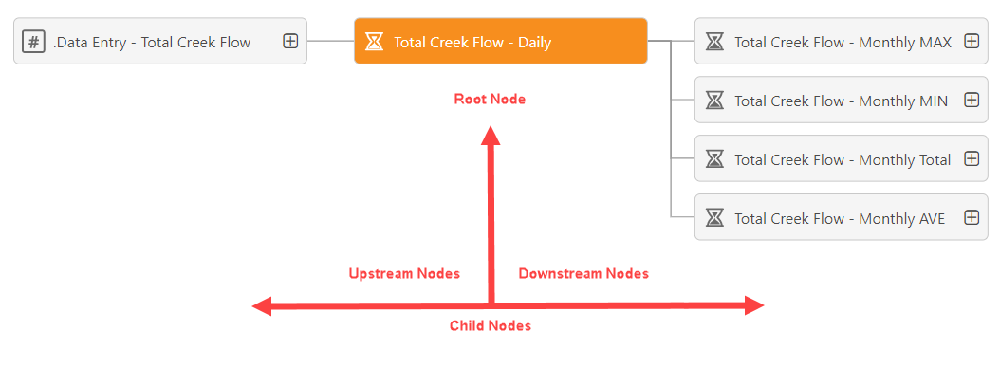
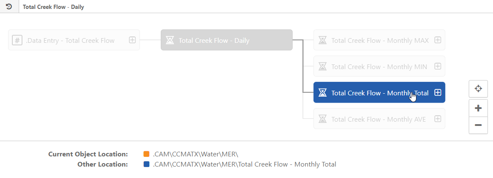

When the graph loads, all requirements will be displayed as nodes. The requirement you selected is the root node, identified by its gold color; all other nodes are child nodes. If any node uses other requirements in its calculation definition, those requirements appear as nodes to the left of the root, and are considered to be upstream nodes; if any node is used in the calculation definition of other requirements, those requirements appear as nodes to the right of the root and are considered to be downstream nodes. Requirements located in the same System Model object as the root node have a solid outline, while those located elsewhere in the System Model have a dashed outline.

Hovering over any node in the graph will highlight a requirement's direct upstream and downstream connections. While hovering, the System Model path and name of the requirement you are pointing to appears in Other Location; Current Object Location always displays the System Model path of the current root node.
If a calculation has more dependencies than the set number of nodes, a warning will appear. A full list of dependencies can be exported in .xlsx format.

If a child node has any upstream or downstream connections at the same level as the root node, those connections are not immediately visible in the graph.
To see them, click the icon for that node to make it the new root node. The graph of the previous root node will still be visible, but those connections will appear dimmed.
To restore the graph of the previous root node, click on the icon in the current root, or click the icon in the Connection History.